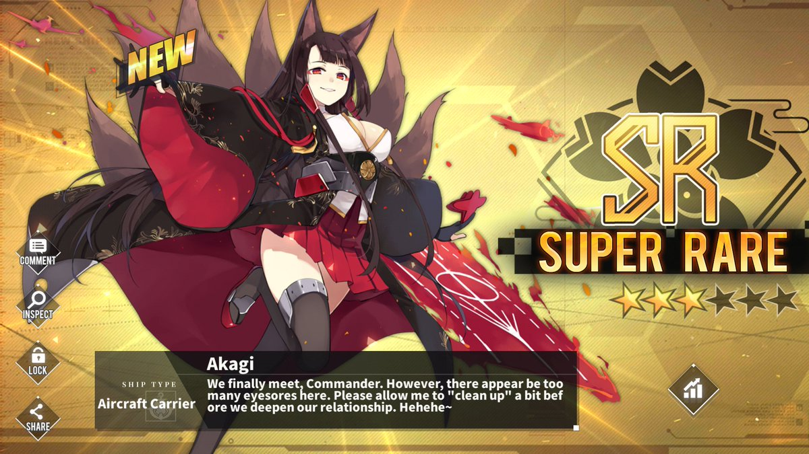

Akagi

|
Akagi is one of the antagonists in the story mode of Azur Lane.
She is part of the 1st Carrier Division in the Sakura Empire (representation of Imperial Japan in the game)
and the counterpart of the IJN Akagi aircraft carrier. She participated in the Pearl Harbor attack and many
other battles in the Pacific until she was sunk during the Battle of Midway.
Akagi is droppable at the boss node of chapter 3-4 with her sister Kaga and is a super rare ship.
She can't be constructed. She is very possessive of her commander, not hesitating to show some hostility
to other shipgirls. Taihou is also considered to be one of her primary love rivals. |